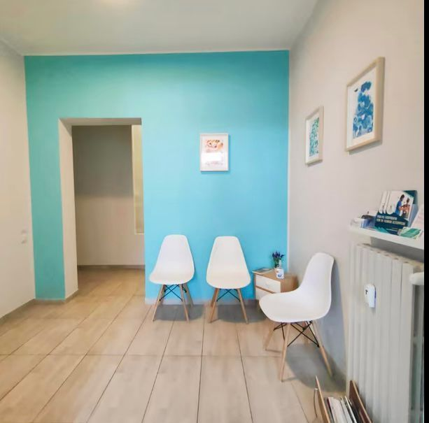
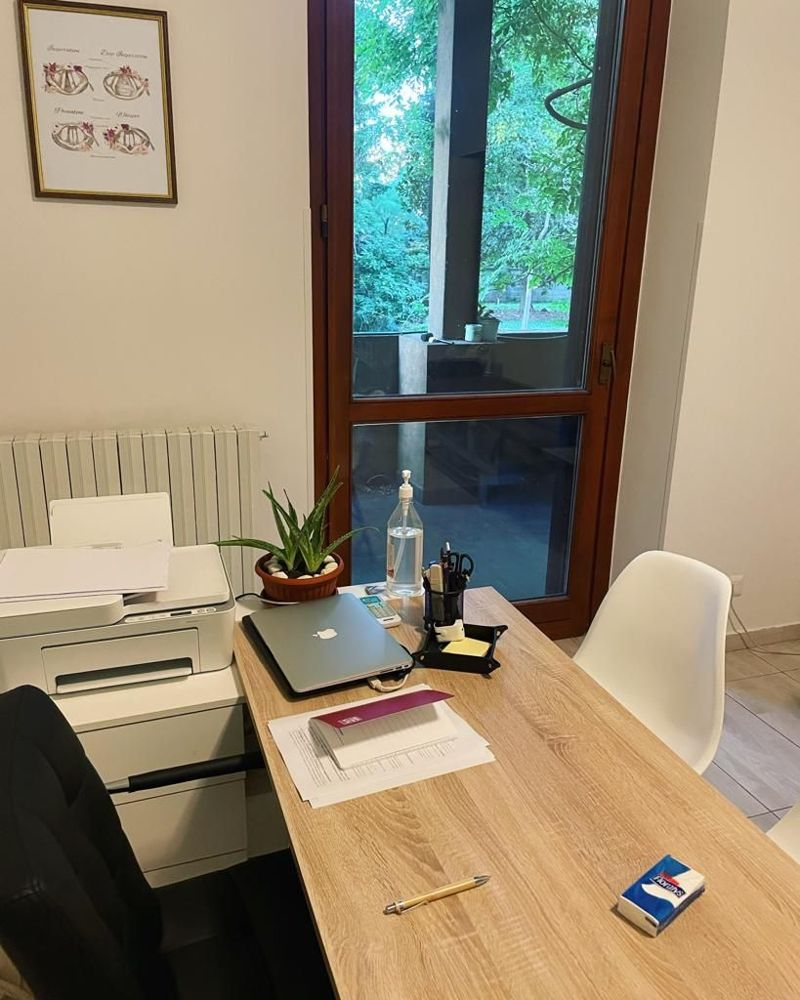
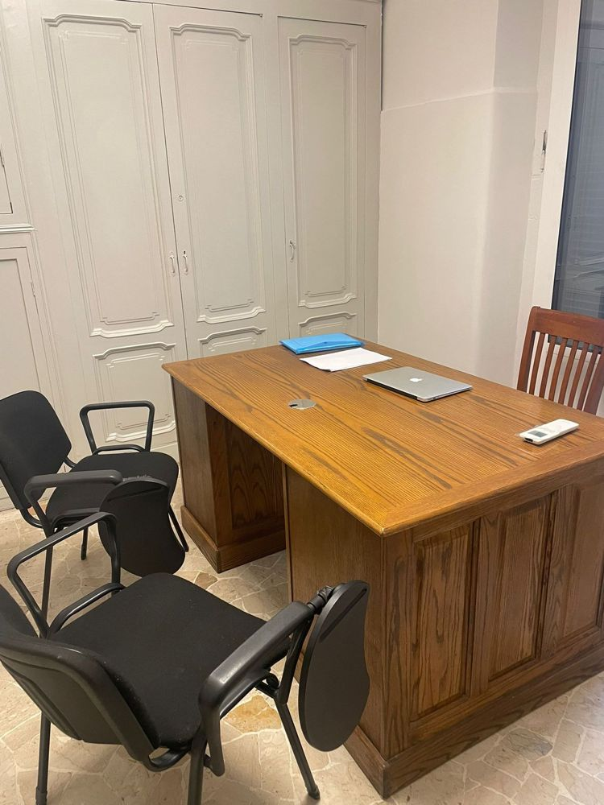
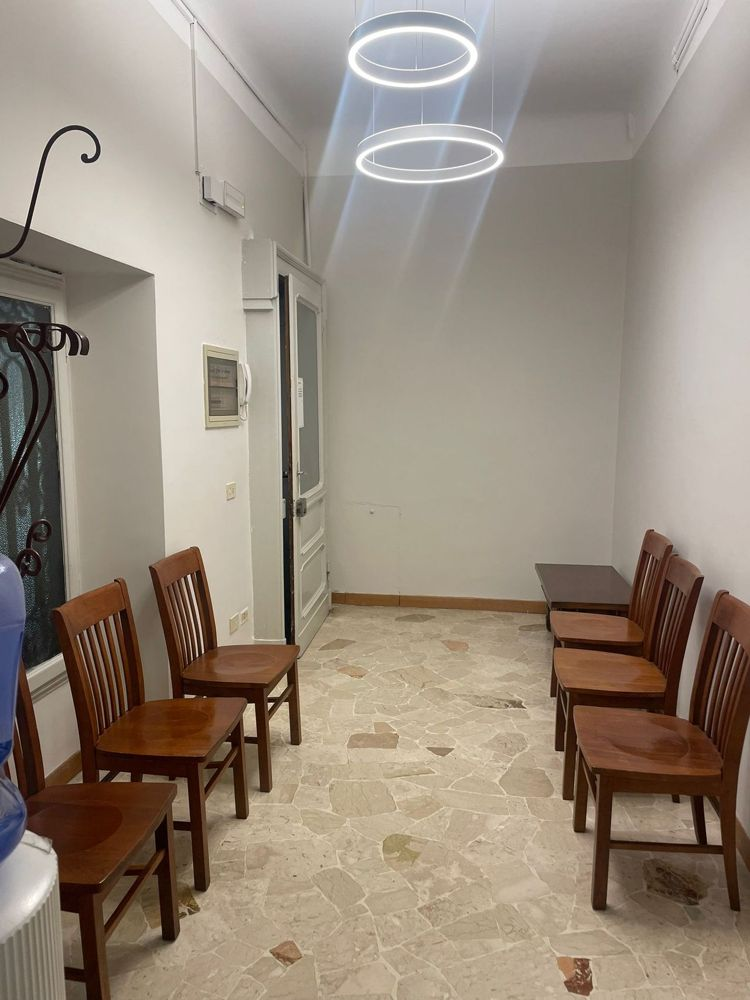
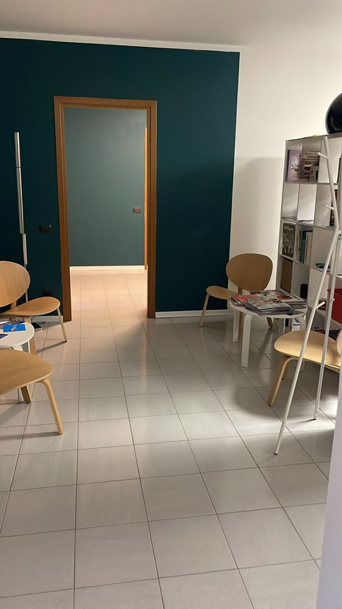
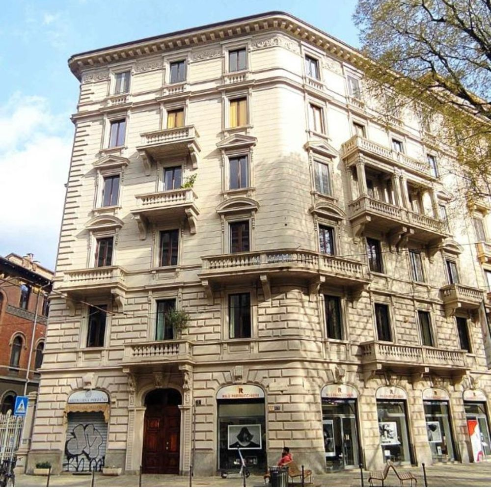

Disturbi d'ansia
Preoccupazione costante, attacchi di panico, ansia sociale, tensione che non dà tregua.
Psicologa · Psicoterapeuta cognitivo-comportamentale · Esperta in neuropsicologia
Accompagno adolescenti, giovani adulti e adulti che attraversano momenti di difficoltà, sofferenza emotiva o relazionale, offrendo uno spazio di ascolto, accoglienza e comprensione privo di giudizio.
Milano · Catania · Online

Chi sono
Psicologa clinica e psicoterapeuta a indirizzo cognitivo-comportamentale, esperta in neuropsicologia.
Mi occupo di benessere psicologico e salute mentale. Credo che intraprendere un percorso psicologico significhi, prima di tutto, concedersi uno spazio in cui potersi fermare, ascoltare ciò che si sta vivendo e comprendere meglio i propri pensieri, emozioni e comportamenti.
Il mio obiettivo è accompagnare ogni persona nella costruzione di una maggiore consapevolezza di sé e nell'individuazione di strategie più funzionali per affrontare le proprie difficoltà e ritrovare un maggiore equilibrio.
Ogni percorso nasce dall'incontro tra una persona e la sua storia. Per questo ritengo fondamentale costruire insieme uno spazio terapeutico basato sull'ascolto, sulla fiducia e sulla collaborazione, nel quale poter affrontare le proprie difficoltà e sviluppare nuove risorse.
Di cosa mi occupo
Lavoro principalmente con queste difficoltà. Se non trovi la tua, scrivimi: ne parliamo insieme.
Preoccupazione costante, attacchi di panico, ansia sociale, tensione che non dà tregua.
Tristezza persistente, perdita di energia e di interesse, senso di vuoto o di blocco.
Pensieri intrusivi e rituali che occupano tempo ed energie e limitano la vita quotidiana.
Un rapporto difficile con il cibo, con il corpo e con la propria immagine.
Emozioni difficili da gestire, conflitti, relazioni che fanno soffrire, momenti di cambiamento.
Valutazione del funzionamento cognitivo (attenzione, memoria, funzioni esecutive) e percorsi di riabilitazione neuropsicologica.
Il mio approccio
Il mio percorso professionale nasce dall'integrazione tra la psicologia clinica e la neuropsicologia, ambiti che mi hanno permesso di sviluppare una visione della persona attenta sia agli aspetti emotivi e relazionali sia al funzionamento cognitivo.
Nel corso della mia formazione ho approfondito l'utilizzo del protocollo EMDR (Eye Movement Desensitization and Reprocessing), conseguendo il Training di I livello presso l'Associazione EMDR Italia. L'EMDR viene integrato, quando indicato, all'interno del percorso clinico e in relazione alle specifiche esigenze della persona.
Un lavoro strutturato su pensieri, emozioni e comportamenti, con obiettivi condivisi e strumenti concreti da usare nella vita di tutti i giorni.
Percorsi individualizzati, costruiti sulle caratteristiche e sugli obiettivi di ciascuno.
Colloquio clinico e somministrazione di test per inquadrare la situazione con chiarezza.
Interventi mirati per sostenere e recuperare le funzioni cognitive.
Integrato nel percorso quando indicato, in particolare per esperienze difficili o traumatiche.
Scegli giorno, orario e sede dal calendario. Ricevi subito una email di conferma.
Nel primo colloquio mi racconti cosa ti porta e cosa vorresti cambiare. Non c'è nulla da preparare.
Definiamo insieme obiettivi, frequenza e strumenti, sempre aperti a revisioni.
Formazione ed esperienza
Relatrice in diversi convegni e del corso di formazione “Gestione del ragazzo con Disturbo oppositivo provocatorio in classe” per coordinatori presso l'Istituto Paolo Frisi di Milano.
Recensioni
Sono arrivata allo studio della dottoressa Brafa circa un anno fa dopo un evento traumatico della mia vita personale che si sommava ad una situazione di stress cronico. Il suo supporto si è rivelato estremamente utile per prendere maggiore consapevolezza e per affrontare e superare le mie difficoltà. La dottoressa è stata molto attenta e professionale. La consiglierei certamente.
Consiglio vivamente la Dottoressa. Sin dal primo incontro ha saputo creare un ambiente sicuro, caldo e privo di qualsiasi giudizio, fondamentale per aprirsi. È una professionista estremamente empatica, attenta e dotata di una rara sensibilità nel cogliere le sfumature emotive. Grazie al suo supporto ho superato momenti molto complessi.
Ho avuto un’esperienza molto positiva con la dottoressa. Fin da subito si è dimostrata una professionista estremamente accogliente, disponibile e attenta, capace di creare un ambiente in cui sentirsi ascoltati, compresi. Il percorso intrapreso con lei mi ha permesso di acquisire maggiore consapevolezza, affrontare alcune difficoltà con strumenti nuovi.
La Dott.ssa Brafa è una professionista straordinaria, dotata di grande sensibilità e profonda competenza. Sa ascoltare con attenzione e guidare la persona verso una reale comprensione di sé e dei propri vissuti emotivi. Il suo approccio integrato mi ha aiutato a ritrovare equilibrio e serenità. Un punto di riferimento prezioso.
Con la Dott.ssa Denise Brafa mi sono sentito ascoltato davvero, senza giudizio e con una sensibilità rara. In un momento difficile della mia vita mi ha aiutato a ritrovare equilibrio, serenità e maggiore fiducia in me stesso. Ogni incontro è stato uno spazio sicuro in cui potermi aprire liberamente. La consiglio di cuore a chiunque senta il bisogno di essere accompagnato con umanità, empatia e grande professionalità.
Mi sono trovato molto bene con la dottoressa. Fin dal primo incontro mi ha fatto sentire ascoltato e compreso, senza giudizio. Percorso serio, umano e concreto, che mi sta aiutando davvero a gestire meglio ansia e situazioni personali difficili. Professionista empatica, disponibile e capace di mettere a proprio agio. Consigliata.
La dottoressa mi ha aiutato in un momento complicato della mia vita. Con la sua empatia e professionalità mi aiutato a conoscermi meglio. Non si limita all'ascolto, ma propone strategie pratiche tramite esercizi mirati che aiutano davvero nella vita quotidiana. Grazie a lei ho ritrovato serenità. La consiglio a chiunque abbia bisogno di un supporto psicologico vero e umano.
La Dott.ssa Brafa durante si è sempre dimostrata estremamente preparata, empatica e capace di costruire, incontro dopo incontro, un percorso che rispondesse alle mie esigenze e ai miei bisogni. Mi sono sempre sentito a mio agio con lei e, per quella che è stata la mia esperienza fino ad ora, la consiglierei senza dubbio a chiunque.
Ho iniziato da un mesetto il mio primo percorso con uno psicologo e non sapevo bene cosa aspettarmi. La dottoressa Brafa è stata subito una super scoperta, mi ha fatto sentire subito a mio agio e mi è stata subito di supporto e aiuto per attraversare un momento delicato della mia vita. Ascolto, comprensione, professionalità, chiarezza sui passi da seguire insieme per raggiungere gli obiettivi e scandire il percorso terapeutico sono alcune delle sue qualità che ho riscontrato fino ad ora, oltre a gentilezza e disponibilità. Sono motivata per affrontare i prossimi step insieme e molto fiduciosa del processo.
Come prima seduta penso tutto bene Grazie mille
Dottoressa molto attenta alle esigenze del paziente, il nostro percorso è iniziato mesi fa e devo dire che abbiamo fatto grandi progressi e miglioramenti. Sono soddisfatta del percorso e lo consiglio a tutti!
La dottoressa è molto cortese e disponibile. Il percorso con lei mi sta aiutando molto ad affrontare un periodo difficile e a prendere consapevolezza della mia situazione.
È circa un mesetto che ho iniziato il percorso con la Dott.ss e rispetto esperienze precedenti non avrei potuto realmente chiedere di meglio. Mi sono trovata subito a mio agio, ha fin dall’inizio individuato attentamente dei punti fondamentali su cui stiamo lavorando. È veramente una dottoressa di massima cortesia e disponibilità con la quale è facile parlare e che allo stesso tempo sa cogliere e collegare minuziosamente ogni dettaglio. In pochissimo tempo mi ha aiutato nella presa di coscienza e nella costruzione di nuovi approcci e reazioni. Personalmente raccomando pienamente la dottoressa, per la grande professionalità, competenza e attenzione verso i pazienti, qualità non facili da trovare.
La dottoressa Brafa ti fa sentire subito a tuo agio. Sono riuscito ad affrontare i miei problemi dopo anni... non so davvero come ringraziarla!! Consigliatissima!
Ho avuto un rapporto di empatia, modo di comunicare molto umano e dolce, ma anche molto deciso sulle mie tidubanze
La dottoressa Brafa è stata bravissima nell'aiutarmi in un periodo per me molto difficile. Mi sentivo incastrato in una vita che non mi piaceva ma non ero in grado di cambiarla. Grazie a lei invece ho capito quanto potere ho nel governare la mia vita. Ho imparato a prendere le decisioni che facessero stare bene me e non gli altri. Mi ha dato ottimi strumenti per difendermi dalle richieste eccessive che ricevevo sia sul posto di lavoro che a casa. Grazie a lei ora la mia vita segue un percorso pianificato e fatto su misura per me, non mi sento più in balia degli eventi. Consiglio vivamente la dottoressa a chi come me sta vivendo dei momenti di insoddisfazione e tristezza.
Professionista disponibile, efficace ed empatica. Fin dai primi appuntamenti ho potuto notare miglioramenti grazie alle tecniche della dottoressa
Dottoressa molto competente. Ho cominciato un percorso con lei qualche mese fa e mi sento già meglio. La strada è lunga, ma sento di essere in buone mani e sono grata alla dottoressa per ciò che sta facendo per me. Grazie di cuore.
Mi è stato utile parlare e condividere le mie problematiche, trattamento buono ed efficace. Professionista serio e gentile.
Inizialmente scettico circa le sedute online, la dott.ssa Brafa mi ha trasmesso una serenità e una competenza tale da abbattere tutte le distanze. Empatica e allo stesso tempo professionale. Mi sono sentito accolto e compreso. Consiglio vivamente!
La professionalità e la dedizione alla professione, sono dei punti che contraddistinguono la dottoressa Brafa. Sempre aggiornata sulle nuove metodologie e le applica con il paziente nel modo più efficace. Consigliatissimo!
La dott.sa DeniseBrafa è disponibile cordiale e attenta.
Ho avuto esperienza con la dott.ssa Brafa per curare ansia e attacchi di panico e tutt'ora sto seguendo con lei la terapia e mi trovo molto bene. La dott.ssa mi fa sentire a mio agio e mi sento molto piu serena e sicura di me. Grazie
La Dottoressa Brafa è stata molto gentile e professionale. Mi sono sentita subito a mio agio ed ascoltata, entrando subito in empatia con lei. La dottoressa è stata puntuale, disponibile e attenta al mio benessere per tutta la durata della visita, senza mai farmi sentire giudicata, rispettando i miei tempi. Consigliatissima!!
La Dottoressa é riuscita a farmi sentire subito a mio agio, pronta all’ascolto senza mai giudicare. Piuttosto spende sempre del tempo per riuscire a trovare le parole più adatte per aiutarmi a migliorare.
Prenota
Scegli il tipo di colloquio, la sede, il giorno e l'orario tra quelli disponibili. Riceverai una email di conferma con tutti i dettagli e potrai spostare o disdire l'appuntamento dallo stesso messaggio.
Scrivimi indicando la sede che preferisci (Milano, Catania o online) e i giorni in cui sei disponibile: ti risponderò al più presto.
Scrivimi per prenotareDove ricevo
Via Vallazze 43
20131 Milano
Istituto Milanese di Psicoterapia Cognitivo Comportamentale
Via Luigi Settembrini, Milano
Via San Filippo Neri 14
95027 (CT)
Videochiamata da dove preferisci, con la stessa riservatezza dello studio.






Domande frequenti
No. Si può chiedere un colloquio anche solo per capire meglio un momento della propria vita, per prendere una decisione o per prendersi cura di sé.
È un percorso di colloqui e test che misura funzioni come attenzione, memoria, linguaggio e funzioni esecutive. Serve a capire come funzionano questi processi e, se necessario, a impostare un intervento di riabilitazione.
È un metodo riconosciuto per elaborare esperienze difficili o traumatiche. Lo integro nel percorso solo quando è indicato e dopo averne parlato insieme.
Sì, accetto pazienti dai 3 ai 65 anni. Per i minori il primo contatto avviene con i genitori.
Per molte persone sì. Serve solo una connessione stabile e un luogo tranquillo in cui sentirsi liberi di parlare.
Sì. Sono tenuta al segreto professionale previsto dal Codice Deontologico degli Psicologi e i tuoi dati sono trattati nel rispetto della normativa sulla privacy.
Accetto bonifico e contanti. Le prestazioni psicologiche sono spese sanitarie detraibili e riceverai regolare fattura.